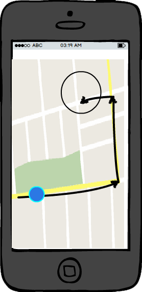

Problem
Nowadays, people who live in the city do not have time to think what do
they want to eat, so they end either eating nothing or eathing anything, regardless if
it is healthy or not. This could lead to severe illnesses or problems in the future. and thus, affect
the economy of the sector the work in.
Audience
The audience is people from 15 to 30 years old who live in the Metropoitan Zone of Guadalajara
who want to have a fast and healthy meal at a right price.
Solution
CityMenu is an app which gives recommendations based on user reviews and a analysis of the
most popular restaurants in the city. With an intuitive design, the user is able to easily find what
to eat in a short period of time.
Impact
In general, this will help to increase productivity and money movement inside the MZG. As people
who work will have an overall better nutrition, their efficency at work increases as well. Also, there is a benefit economically to the food sector as it will have more clients.

The app provides geolocalization services, so you can find the food service you want
in no time at all!

Our search engine enables you to find the best option based on
distance, ratings, times, and other filters, making your decision easy
and enjoyable.

If you do not know what to search for, don't worry! The app can provide
suggestions with basis on your location and user ratings, so when you
don't have any idea of what to eat, we can provide it for you.

In some cases, restaurants accept reservations. So if that is the case, you can
reserve right from the app. If that is not the case, a phone call is at a tap of distance.

So now you know what to eat. But you need to get there. Luckily, CityMenu takes you there in
no time. Just start the navigation service and follow the instructions to arrive to the restaurant. If
you wish, you can set a phone call to the restaurant once you are close if you plan to take your meal with
you. The decision is yours.

Last but not least, when you finish your meal you will get a notification reminding you to rate your
experience at the restaurant. That way the community grows bigger and bigger. Maybe you can help
somebody with your review, who knows?
 Eat delicious food
Eat delicious food In an interactive and easy way
In an interactive and easy way From exquisite snacks...
From exquisite snacks... Everything at your fingertips
Everything at your fingertips ... Anywhere in the city
... Anywhere in the city